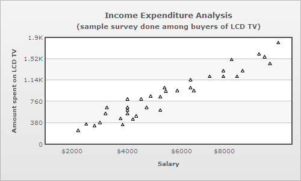
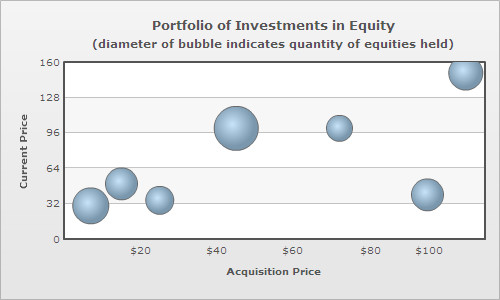
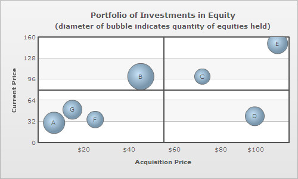
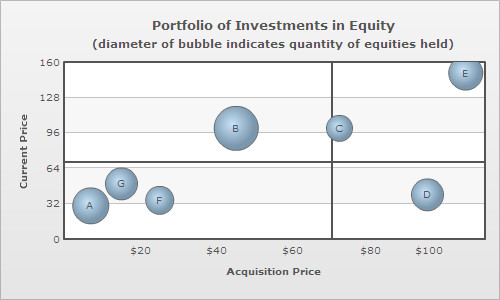
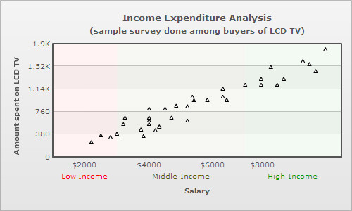
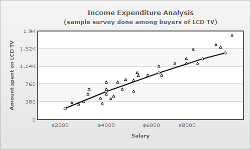

| XML/JSON Attributes for Scatter and Bubble Charts | ||||||||||||||||||||||||||||||||
|
Bubble and scatter charts are used for plotting data that can be defined in terms of multiple numeric parameters. In these charts, both X and Y axes are numeric. So, the position of a data point is an indicator of two distinct numeric values. The scatter chart is used for plotting data which is defined in terms of two numeric parameters.  Scatter charts are multi-series charts, but their data format is slightly different from that of conventional multi-series charts. Following is the data for the above chart: <chart caption='Income Expenditure Analysis' subcaption='(sample survey done among buyers of LCD TV)' xAxisName='Salary' yAxisName='Amount spent on LCD TV'>
<categories>
<category x='0' />
<category name='$2000' x='2000' />
<category name='$4000' x='4000' />
<category name='$6000' x='6000' />
<category name='$8000' x='8000' />
<category x='10000'/>
</categories>
<dataset color='000000'>
<set x='2500' y='350' />
<set x='2200' y='240' />
<set x='3000' y='380' />
<set x='2800' y='325' />
<set x='3250' y='650' />
<set x='3200' y='541' />
. . .
</dataset>
</chart>
{
"chart":{
"caption":"Income Expenditure Analysis",
"subcaption":"(sample survey done among buyers of LCD TV)",
"xaxisname":"Salary",
"yaxisname":"Amount spent on LCD TV"
},
"categories":[{
"category":[{
"x":"0"
},
{
"name":"$2000",
"x":"2000"
},
{
"name":"$4000",
"x":"4000"
},
{
"name":"$6000",
"x":"6000"
},
{
"name":"$8000",
"x":"8000"
},
{
"x":"10000"
}
]
}
],
"dataset":[{
"color":"000000",
"data":[{
"x":"2500",
"y":"350"
},
{
"x":"2200",
"y":"240"
},
{
"x":"3000",
"y":"380"
},
{
"x":"2800",
"y":"325"
},
{
"x":"3250",
"y":"650"
},
{
"x":"3200",
"y":"541"
}
]
}
]
...
}
The bubble chart is used for plotting data, which is defined in terms of three numeric parameters. The third numeric parameter is indicated by the diameter of the bubble.  The XML/JSON format of a bubble chart is slightly different from that of a scatter chart, this is because the bubble chart plots an additional numeric parameter. Following is the data for the above chart: <chart caption='Portfolio of Investments in Equities' subcaption='(diameter of bubble indicates quantity of equities held)' xAxisName='Acquisition Price' yAxisName='Current Price' >
<categories>
<category x='0' />
<category label='$20' x='20' />
<category label='$40' x='40' />
<category label='$60' x='60' />
<category label='$80' x='80' />
<category label='$100' x='100' />
<category x='120' />
</categories>
<dataset>
<set x='7' y='30' z='1000' name='A' />
<set x='45' y='100' z='1500' name='B' />
<set x='72' y='100' z='500' name='C' />
<set x='95' y='40' z='800' name='D' />
<set x='105' y='150' z='900' name='E' />
<set x='25' y='35' z='600' name='F' />
<set x='15' y='50' z='800' name='G' />
</dataset>
</chart>
{
"chart":{
"caption":"Portfolio of Investments in Equities",
"subcaption":"(diameter of bubble indicates quantity of equities held)",
"xaxisname":"Acquisition Price",
"yaxisname":"Current Price"
},
"categories":[{
"category":[{
"x":"0"
},
{
"label":"$20",
"x":"20"
},
{
"label":"$40",
"x":"40"
},
{
"label":"$60",
"x":"60"
},
{
"label":"$80",
"x":"80"
},
{
"label":"$100",
"x":"100"
},
{
"x":"120"
}
]
}
],
"dataset":[{
"data":[{
"x":"7",
"y":"30",
"z":"1000",
"name":"A"
},
{
"x":"45",
"y":"100",
"z":"1500",
"name":"B"
},
{
"x":"72",
"y":"100",
"z":"500",
"name":"C"
},
{
"x":"95",
"y":"40",
"z":"800",
"name":"D"
},
{
"x":"105",
"y":"150",
"z":"900",
"name":"E"
},
{
"x":"25",
"y":"35",
"z":"600",
"name":"F"
},
{
"x":"15",
"y":"50",
"z":"800",
"name":"G"
}
]
}
]
}In case of bubble and scatter charts categories are optional, since the X axis is numeric. So, categories are only used for defining the X axis scale. Unlike other multi-series charts where each dataset contains the same number of <set> elements as the number of categories, scatter and bubble charts can have varying number of <set> elements under each dataset. |
||||||||||||||||||||||||||||||||
| Displaying labels on bubbles | ||||||||||||||||||||||||||||||||
Labels can be displayed on each bubble of a bubble chart. For this however, every <set> element must be allotted a label or an identifier using name attribute:
<set x='45' y='100' z='1500' name='B' /> To make the labels visible over the bubbles, showValues attribute must be declared in the <chart> element: <chart showValues='1' . . . /> |
||||||||||||||||||||||||||||||||
| Drawing quadrants on bubble and scatter charts | ||||||||||||||||||||||||||||||||
|
Dividing the canvas of a bubble/scatter chart into quadrants makes analysis of the chart easier. Quadrant lines can be added to the chart by declaring drawQuadrant attribute of the <chart> element. <chart drawQuadrant='1' . . . > |
||||||||||||||||||||||||||||||||
 By default, the quadrant lines appear at the center of the canvas, but their position can be customized using quadrantXVal and quadrantYVal attributes. quadrantXVal sets the position of the vertical quadrant line relative to the X axis and quadrantYVal sets the position of the horizontal quadrant line relative to the Y axis.The value of these attributes must be within the range of their corresponding relative axis (and not pixels). In the chart above, since X axis ranges from 0-120 and Y axis ranges from 0-120, the following data is used to customize the position of the quadrant lines: <chart quadrantXVal='70' quadrantYVal='70' . . . > |
||||||||||||||||||||||||||||||||
 Each quadrant can have its own title in the form of a label. The attributes for defining labels for the upper quadrants are quadrantLabelTL and quadrantLabelTR (TL for top left and TR for top right quadrant). Similarly, the attributes for defining the labels for the lower quadrants are quadrantLabelBL and quadrantLabelBR (BL for bottom left and BR for bottom right quadrant). <chart quadrantLabelTL='Good' quadrantLabelTR='Moderate' quadrantLabelBL='Stagnant' quadrantLabelBR='Bad' . . . > |
||||||||||||||||||||||||||||||||
|
Customization of quadrant lines and labels can be done using following attributes:
|
||||||||||||||||||||||||||||||||
| Segmenting the X axis of bubble/scatter charts into categorical zones | ||||||||||||||||||||||||||||||||
The X-axis of bubble/scatter chart can be segmented into categorical zones using vertical trend lines. Segmentation of the X-axis is done in the following manner:
<vTrendLines>
<line startValue='1000' endValue='3000' displayValue='Low Income' isTrendZone='1' color='FF0000' alpha='5'/>
<line startValue='3000' endValue='7000' displayValue='Middle Income' isTrendZone='1' color='5B5B00' alpha='5'/>
<line startValue='7000' endValue='10000' displayValue='High Income' isTrendZone='1' color='009900' alpha='5'/>
</vTrendLines>"vtrendlines":[{
"line":[{
"startvalue":"1000",
"endvalue":"3000",
"displayvalue":"Low Income",
"istrendzone":"1",
"color":"FF0000",
"alpha":"5"
},
{
"startvalue":"3000",
"endvalue":"7000",
"displayvalue":"Middle Income",
"istrendzone":"1",
"color":"5B5B00",
"alpha":"5"
},
{
"startvalue":"7000",
"endvalue":"10000",
"displayvalue":"High Income",
"istrendzone":"1",
"color":"009900",
"alpha":"5"
}
]
}
]
|
||||||||||||||||||||||||||||||||
| Connecting scatter plots by a line in XY (Scatter) chart | ||||||||||||||||||||||||||||||||
|
In scatter charts, the data points of a particular series (dataset) can be connected by a line. This can be done by declaring drawLine attribute of the <dataset> element as under: <dataset drawLine="1" . . . > Following scatter chart contains two series (datsets), one of which comprises of only four data points that are connected by a line. The line acts a regression line for the scatter plots of the other series.  |